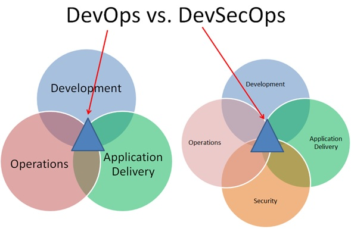

Introduction
When it comes to software development, DevOps has given organizations unprecedented levels of speed and flexibility. However, too often, speed comes at the expense of security. After all, the faster teams need to deliver code, the easier it is to overlook security or postpone it. Many organizations that rush past security in the development stage have to slow down significantly in the production stage when security flaws are identified and need to be fixed. That’s where security champions come in! By introducing a security champion into your development team, you can keep security at the forefront while improving overall product quality.
Who Is A Security Champion?
A security champion can be any team member interested in security and serves as a liaison between development and security—two traditionally siloed teams. A good security champion advocates security awareness in the entire team, striving to teach the ropes to others as well. The goal of a security champion is to be an enabler, not a blocker. A security champion is also responsible for ensuring that the team's code is secure, free from any security issues, and compliant with industry best practices. This can be achieved through code reviews, static analysis, and dynamic analysis.
Who Can Be A Security Champion?
Ideally, a security champion is someone familiar with the product under development and is aware of any potential security issues. In most cases, the security champion is a developer, but they could also be a QA, a designer, an architect, a DevOps, or even a product manager. The security champion doesn’t have to be the scrum master or a team leader. However, team leaders must support the security champion and prioritize security as a project goal.
Medly’s Security Champion Program
We recognized the importance of the security champion program in strengthening our core security value and shifting security left and implemented the program earlier this year. Our Platform Security team plays a pivotal role in the smooth operation of the security champion program and ensures the following:
- Arranges regular catch-ups with the security champions.
- Helps the champions set up security tools for the team.
- Provides regular training to the security champions on:
- Secure coding
- DevSecOps
- Threat Modeling
- Addresses any security-related questions.
Role Of A Security Champion At Medly
Medly's security champions serve as the team’s security conscience, keeping their eyes and ears open for potential security threats. A Medly security champion performs the following tasks:
- Regularly connects with the security team about the product’s security posture.
- Defines security best practices for the team.
- Prioritizes security-relevant stories in the backlog.
- Monitors vulnerabilities in tools and libraries that the team is using.
- Owns the threat model of the product.
- Collaborates with the other security champions within Medly to share ideas.
- Raises awareness of the security issues within the development team.
- Acts as a single point of contact for escalating an issue to the security team for review.
- Conducts secure code reviews and brings up any risks in the code base.
- Utilizes security testing tools to perform or validate automated security scanning.
- Spends approximately an hour per week on security-related activities.
- Promotes and manages events like Capture the Flag (CTF) competitions to assist in detecting vulnerabilities.
How Medly Kickstarted The Security Champion Program
The program kicked off earlier this year with a small group of dedicated security champions committed to helping us achieve our security goals. Since then, the security champion program has grown significantly. We now have over 30 security champions actively involved in the program across multiple products, data engineering, and IT teams. We’re excited to see the program grow and look forward to seeing the impact our security champions have on the security of the organization.
By following the steps outlined below, we built an effective team of security champions:
- Identifying the requirements of the program
- Defining the roles and responsibilities of the security champions
- Nominating the security champions
- Setting up communication channels
- Building a solid knowledge base
The below flowchart explains each of these steps in detail.

Impact Of Security Champion Program At Medly
The security champion program at Medly has had a positive impact on the overall security of the organization. The program has helped to raise awareness of security risks and vulnerabilities and has also helped to improve the security posture of the organization.
Here are some of the prominent highlights of the program:
- Our vulnerability fix meantime has been 16 days compared to the industry standard of 120 days.
- The critical security issues are already 63% lower, thanks to our security champions, who are actively fixing vulnerabilities.
- The security champions fixed 1280+ vulnerabilities in just 3 days of kickstarting the program.
Summing It Up
Security champions at Medly play a significant role in inculcating a sense of responsibility for security within the organization. Implementing the security champion program has helped us to contribute to a culture of security awareness, leading to more secure applications and better security features.
We hope this blog inspires you to implement a security champions program at your organization and empower your employees to address security issues proactively. Happy reading, folks!